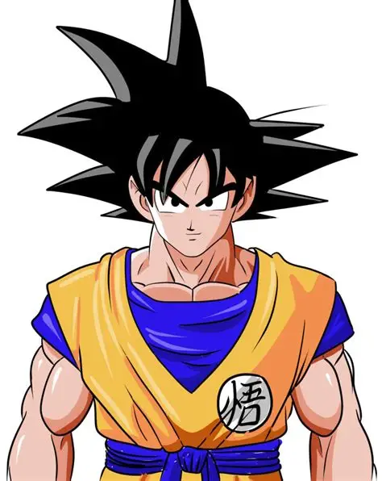
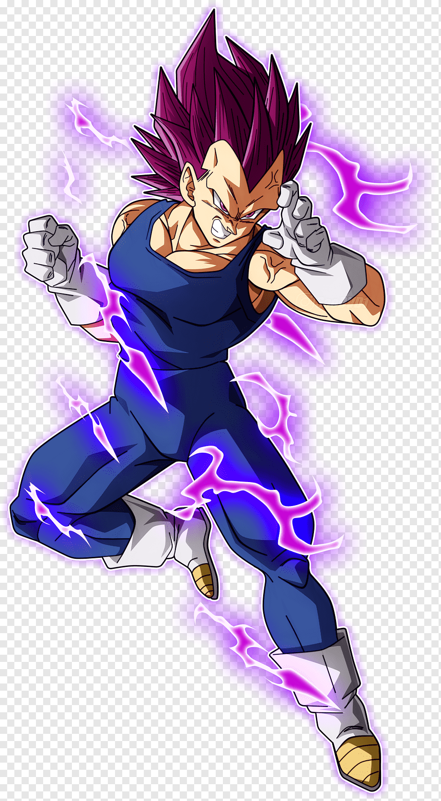

Son Goku[nb 20] is a fictional character and the main protagonist of the Dragon Ball manga series created by Akira Toriyama. He is based on Sun Wukong (known as Son Gokū in Japan and the Monkey King in the West), a main character of the classic 16th-century Chinese novel Journey to the West, combined with influences from the Hong Kong action cinema of Jackie Chan and Bruce Lee. Goku made his debut in the first Dragon Ball chapter, Bulma and Son Goku,[nb 21][nb 22] originally published in Japan's Weekly Shōnen Jump magazine on December 3, 1984.[2] Goku is introduced as an eccentric, monkey-tailed boy who practices martial arts and possesses superhuman strength. He meets Bulma and joins her on a journey to find the seven wish-granting Dragon Balls. Along the way, he finds new friends who follow him on his journey to become stronger. As Goku grows up, he becomes the Earth's mightiest warrior and battles a wide variety of villains with the help of his friends and family, while also gaining new allies in the process. Born under the name Kakarot,[nb 23][nb 24] as a member of the Saiyan race on Planet Vegeta, he is sent to Earth as an infant prior to his homeworld's destruction at the hands of Frieza. Upon his arrival on Earth, the infant is discovered by Son Gohan, who becomes the adoptive grandfather of the boy and gives him the name Goku. The boy is initially full of violence and aggression due to his Saiyan nature, until an accidental head injury turns him into a cheerful, carefree person. Grandpa Gohan's kindness and teachings help to further influence Goku, who later on names his first son Gohan in honor of him. As the protagonist of Dragon Ball, Goku appears in most of the episodes, films, television specials and OVAs of the manga's anime adaptations (Dragon Ball, Dragon Ball Z) and sequels (Dragon Ball GT, Dragon Ball Super, Dragon Ball Daima), as well as many of the franchise's video games. Due to the series' international popularity, Goku became one of the most recognizable and iconic manga/anime characters worldwide. Outside the Dragon Ball franchise, Goku has made cameo appearances in Toriyama's self-parody series Neko Majin Z, has been the subject of other parodies, and has appeared in special events. Most Western audiences were introduced to the adult version of Goku featured in the Dragon Ball Z anime, which adapted the final 26 Dragon Ball manga volumes, as opposed to his initial appearance as a child due to the limited success of the first anime series overseas.[3]

Vegeta's Evolution Vegeta's character evolution is marked by significant transformations and pivotal decisions throughout the Dragon Ball series. Initially introduced as the first major antagonist, Vegeta's journey from villain to hero is a central theme in Dragon Ball Z and Dragon Ball Super. His transformation is driven by his desire to surpass Goku and his Saiyan pride, which often leads him to fight against his own will. Vegeta's evolution is further highlighted by his deep bond with Bulma and his role as a father figure to his children, Trunks and Bulla. His character development has been praised for its depth and complexity, making him one of the most iconic characters in anime and manga history.